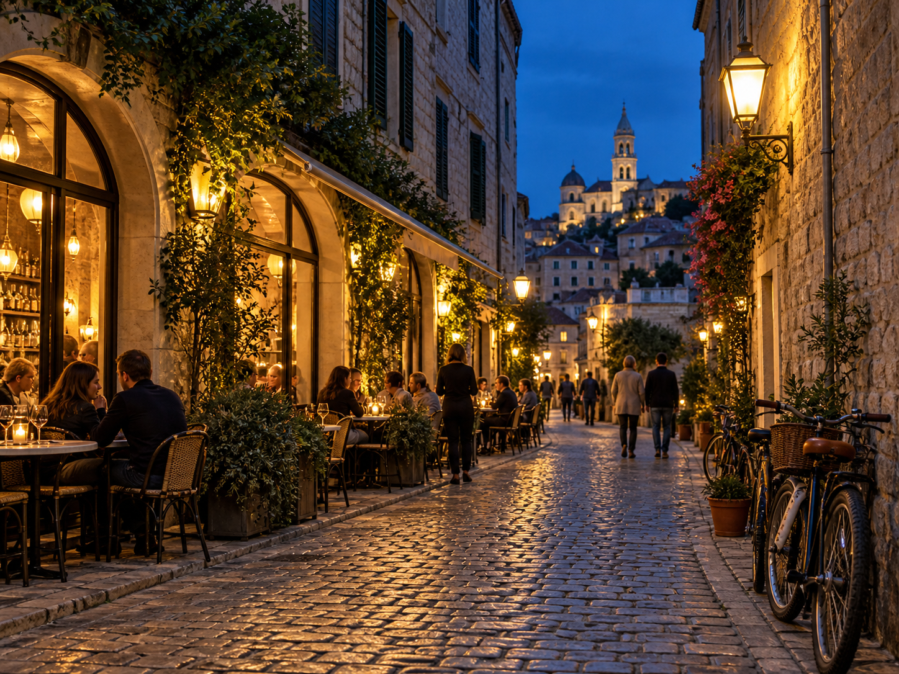
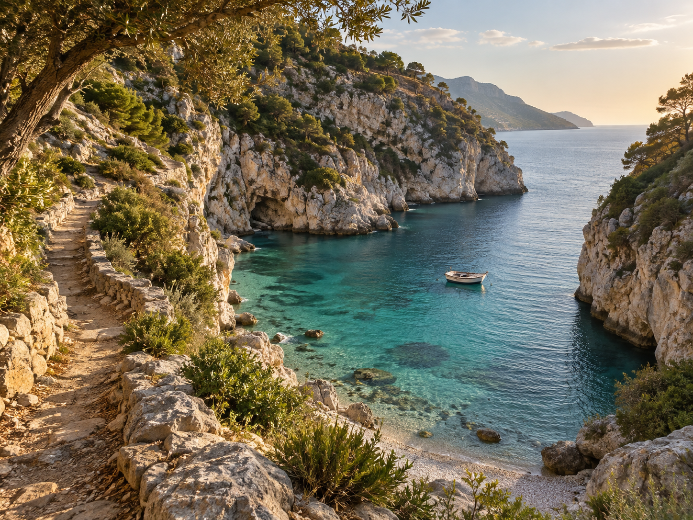

Wild places
Hidden corners, unforgettable light
The stories we bring home are often found beyond the itinerary.
Read storyA thought for the road
Travel Brings Power And Love Back into Your Life.
Of All The Books In The World The Best Stories Are Found Between The Pages of a Passport.
See the World. It’s More Fantastic than Any Dream.
Travel deeper
Go beyond the postcard. Discover the people, places and quiet details that make every journey worth remembering.
Read our storyLatest from the journal
Wild places
The stories we bring home are often found beyond the itinerary.
Read story
Cities & culture
Local tables, old streets and an evening made for wandering.
Read story
Coastal escapes
A quiet path to clear water, rugged cliffs and unhurried days.
Read storyExplore by feeling
Find inspiration for mountain mornings, city nights and long days beside the sea.
Travel Riddle
Thoughtful travel stories, useful ideas and destination inspiration for journeys with more meaning.
Explore the journal